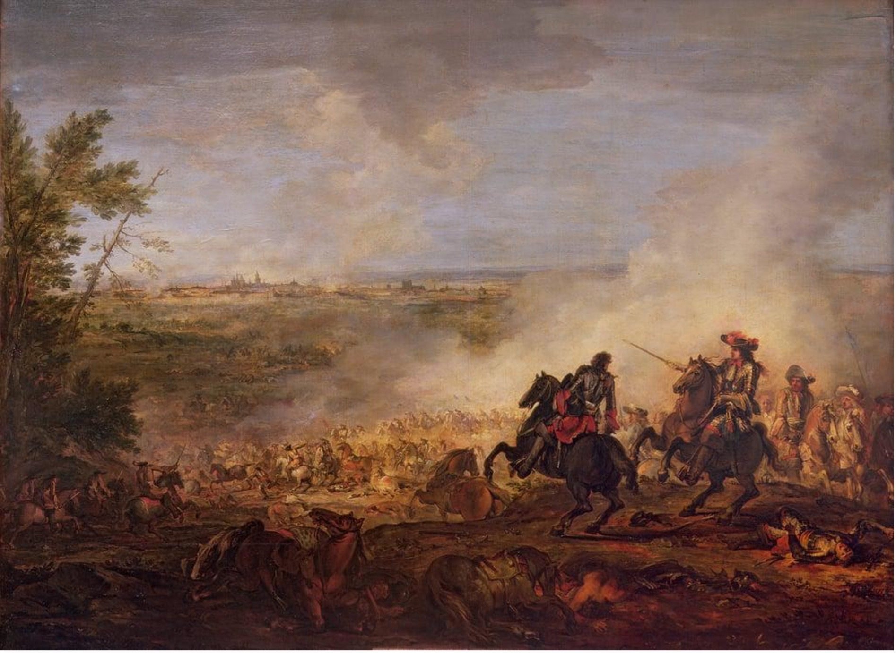
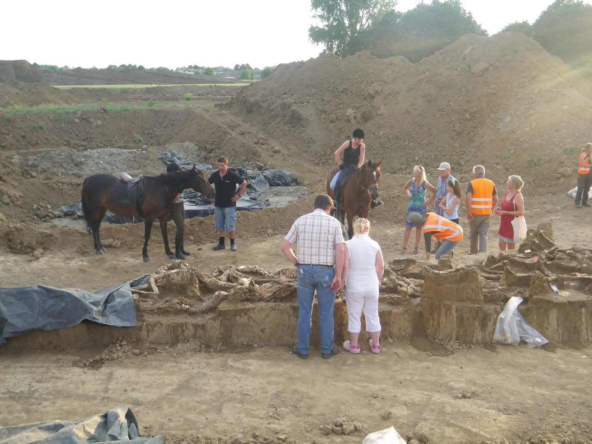
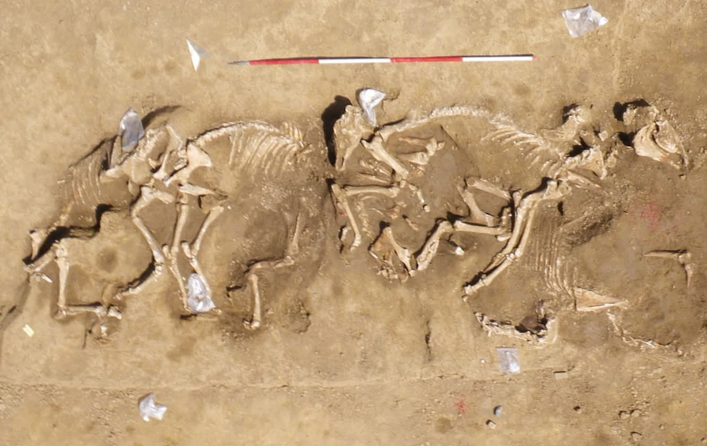

Het grootste
paardengraf van Europa
In mei 2010 werd bij Borgharen, ten noorden van Maastricht, het grootste paardengraf van Europa ontdekt. Zevenenzestig oorlogspaarden, begraven in één lange greppel — getuigen van een 17e-eeuwse belegering die tot diep in de bodem was weggezonken.

Luchtopname van de opgraving · Borgharen, mei 2010 · foto: Ralph Faun
De Ontdekking
Een vondst die niemand verwachtte
Op een meidag in 2010 leggen archeologen bot na bot bloot tijdens bodemonderzoek van het Consortium Grensmaas aan de Trichtervoogdenstraat in Borgharen. Rugwervels, hoeven, schedels — vrijwel op één lijn. Elke schep vergroot de verbijstering.
Uiteindelijk geeft de bodem 67 skeletten prijs, gerangschikt over een lengte van bijna 40 meter. De dieren liggen in onnatuurlijke houdingen met sterk opgetrokken benen of gekromde ruggen — door lijkstijfheid, of de ruwe manier waarop ze de greppel in werden getrokken.
"Het was fantastisch, uniek. Ze lagen helemaal door elkaar; de kop van de een tussen de benen van de ander. En elke dag kwamen er meer botten uit, het hield niet op."

Open dag bij de opgraving, zomer 2010 — bezoekers en paarden bij de vindplaats
Het paardengraf veroorzaakt in de zomer van 2010 een ware gekte. Bij de open dag wordt de deur platgelopen. Zelfs daarna bezoeken nieuwsgierigen op eigen houtje de vindplaats — soms trekken ze aan poten en verdwijnen hoefijzers.
- 67 tot 69 paardenskeletten, gestapeld in één belegeringsgreppel
- De greppel meet circa 50 bij 2 meter
- Vindplaats: Trichtervoogdenstraat 68, Borgharen
- Ontdekt tijdens bodemonderzoek voor het Consortium Grensmaas
- Nooit eerder werd in Europa zo'n groot paardengraf gevonden
De Vondsten
Skeletten, wapens en paardentuig


- 67–69 paardenskeletten, overwegend volwassen hengsten
- Tientallen hoefijzers
- Loden musketkogels
- Delen van tuigage en leren riemen
- In acht schedels: een kogel — bewijs van een genadeschot of frontale charge
- Leeftijd: 4 tot 10 jaar — jonge, fitte cavaleriedieren
- Slank en wendbaar, niet de zware trekpaarden uit de streek
- Isotopenonderzoek bewijst: niet afkomstig uit de regio Maastricht
- Breuken en sporen van excessief geweld — ze kwamen van een slagveld
- Een archozoölogische studie wees uit dat het vrijwel zeker oorlogspaarden zijn

Lodewijk XIV triomfantelijk te paard voor Maastricht · schilderij ca. 1673
1632 of 1673?
Twee belegeringen, één massagraf
Welke belegering deed de paarden sneuvelen? Er bestaan twee concurrerende theorieën, beide ondersteund door historische bronnen en archeologische vondsten.
- Beleg op de Spanjaarden
- Kaarten tonen paardenschans op exact deze locatie
- Bronnen melden hevige ruitergevechten bij Borgharen
- Afgevallen na nieuw C14-onderzoek
- Franse circumvallatie past exact op de vindplaats
- Tienduizend cavaleriepaarden bij het beleg
- Franse munt (liard) gevonden bij menselijke resten
- Meest waarschijnlijk (Dijkman, 2024)
Nieuwe C14-analyses van paardentanden beperkten de leefperiode tot 1650–1800, waarmee 1632 als optie verviel. Archeoloog Wim Dijkman projecteerde vervolgens de circumvallatielinie van 1673 — de complete ring van grondwallen en grachten waarmee de Fransen Maastricht isoleerden — op de vindplaats.
Het paste nagenoeg precies. De Fransen begroeven hun paarden in de belegeringsgracht die ze zelf al hadden gegraven.
"Ze hoefden ze alleen nog maar aan hun benen de greppel in te trekken."
Het Mysterie Ontrafeld
Hoe Wim Dijkman het raadsel oploste

Voormalig curator van Centre Céramique. Hij liet op eigen kosten nieuwe C14-analyses uitvoeren en publiceerde zijn bevindingen bij een expositie over de Franse musketiers in Château de Vincennes — het Parijse kasteel waar Lodewijk XIV resideerde vóór Versailles.
Het eerste officiële onderzoek wees op 1794 als meest waarschijnlijke datering — het jaar van de Franse Revolutionaire belegering. Het cruciale bewijs: een 18e-eeuws pijpenkopje en een gesp met paardentuig, gevonden onderin het graf.
Dijkman vond dit bewijs te pover. "Ik wilde het zeker weten." Nieuwe C14-technieken dateren de paarden tussen 1650 en 1800 — daarmee viel 1632 weg, maar ook 1794 klopte niet met de archeologische context.
Gevechtsschilder Joseph Parrocel toont het beleg van 1673, met Lodewijk XIV te paard en dode paarden op de voorgrond
De doorbraak: met moderne georeferentietechnieken projecteerde Dijkman de circumvallatielinie van 1673 op de huidige kaart. De circumvallatie was een complete ring van grondwallen en grachten waarmee de Fransen de stad volledig isoleerden. De linie viel nagenoeg precies samen met de vindplaats van het paardengraf.
Van het beleg van 1673 is bovendien bekend dat Lodewijk XIV een enorme troepenmacht te paard meevoerde — naar schatting tienduizend paarden verdeeld over honderden eskadrons. Bij die aantallen is het niet verwonderlijk dat er "hier een aantal het loodje hebben gelegd," aldus Dijkman.
"Paarden worden in Frankrijk met heel veel respect behandeld. Voor de Zonnekoning zelf waren de edele dieren bovendien onmisbaar voor zijn imago als groot veldheer."
- Op andere slagveldlocaties werden paardenbotten vroeger als meststof gebruikt
- Bij de Slag bij Waterloo (20.000 doden) is geen enkel massagraf teruggevonden
- Het afgelegen ligging van Borgharen heeft het graf onaangetast gelaten
- Nergens in Europa zijn zoveel oorlogspaarden samen gevonden
Bekijk het Verhaal
Het mysterie van het paardengraf
Archeoloog Wim Dijkman legt uit waarom het paardengraf van Borgharen toch ouder blijkt dan aanvankelijk gedacht — en hoe hij dit stap voor stap heeft bewezen met nieuwe C14-analyses en historisch kaartmateriaal.